FERNANDO SALOM
Entrepreneur and technologic geek always looking for business opportunities everywhere at any time. I have a degree in Computer Science, an International MBA and a Project Manager certificate by the University of California. I have designed, developed and maintained hundreds of websites and applications for leading companies. I work with the most updated programming languages, libraries and databases to develop innovative and powerful tools to give the best solutions to the client’s needs. I love to surf the Internet, meet people from different cultures, read blogs, eat popcorn at the cinema, play football and dream about Japan.
RICHARD MORLA
Entrepreneur and marketing passionate. I have a degree in Advertising and Public Relations, an International MBA and I’m currently studying a Phd in Marketing. I have worked as an actor, journalist, product manager, marketing manager, university lecturer for international business, publisher of a luxury lifestyle magazine and managing director of my own publishing company specialized in the teen market. I have lived in Madrid, London, Shanghai and California. I love organizing stuff, travelling, the big cities, good brands and neon lights. I really enjoy going out, the street entertainment, the colorful things and trying everything new.
HOLA@GOMUGOMU.ES · SORNI 7, VALENCIA (SPAIN)